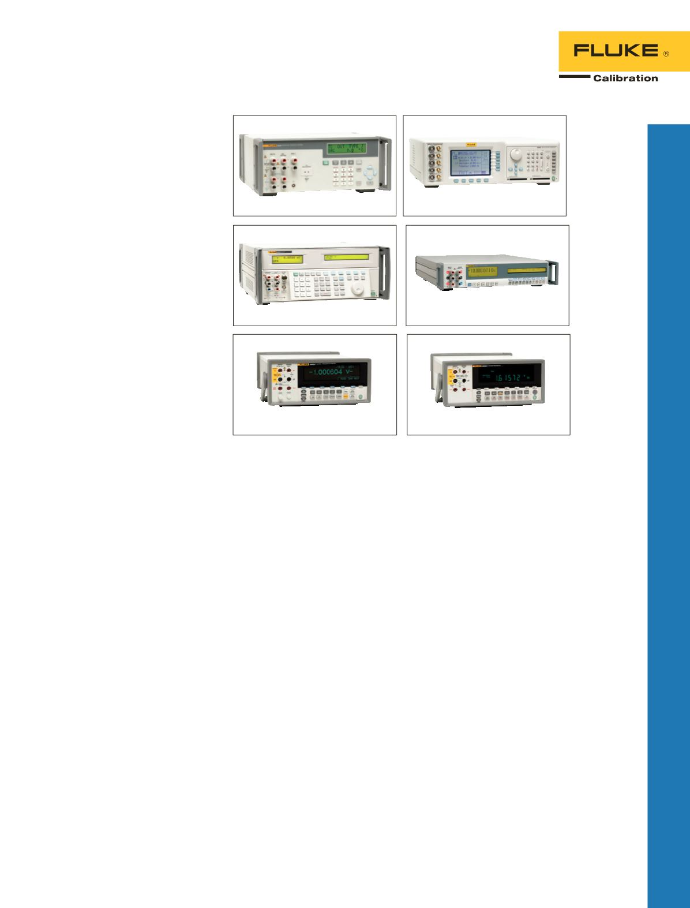

8845A/8846A
8808A
9500B
8508A
55XX
Oszilloskop-
kalibratoren
Oszilloskopkalibrator 9500B
Die aufrüstbare vollautomatische
Oszilloskop-Kalibrier-Arbeitsstation
mit der höchsten Leistung.
•
Volle Automatisierung für
vollständig unbeaufsichtigte
Kalibrierung
•
Bandbreiten von 600 MHz,
1.000 MHz, 3.200 MHz und
6.400 MHz
•
Steile Flanke von 25 ps für
Bandbreiten von bis zu 14 GHz
•
Anschluss von bis zu fünf
Kanälen gleichzeitig
Oszilloskop-Kalibrieroptionen
Serie 55XX
Über Optionen für die Kalibratoren
5502A und 5522A können
Funktionen zur Kalibrierung
von digitalen und analogen
Oszilloskopen in einem beliebigen
von drei Bandbreitenbereichen
hinzugefügt werden.
•
Gepegelter Sinusgenerator
mit optionalen Bandbreiten
von 300 MHz, 600 MHz und
1.100 MHz zur Überprüfung der
Oszilloskopbandbreite
•
DC- und Rechteckwellenspan-
nungsgeneratoren
zur Kalibrierung der
Spannungsverstärkung
•
Kalibrierfunktionen mit
horizontaler Zeitbasis
•
Flankenquelle mit steiler
Flanke von 300 ps und
niedrigen Anomalien zur
Verifizierung eines dynamischen
Ansprechverhaltens
•
Impulsgenerator mit schneller
Flankenanstiegszeit (< 1 ns) zur
Überprüfung der Impulsantwort
Referenz-Multimeter 8508A
Für die Referenznormale
erforderliche Genauigkeit
und Stabilität, in einer
multifunktionalen, leicht
einsetzbaren Lösung.
•
8,5-stellige Auflösung,
außergewöhnliche
Linearität, niedriges Rauschen
und Stabilität
•
Optionale elektronische
vordere/hintere Eingänge
mit einzigartiger
Verhältnismessoption
•
Große Bandbreite an
Messfunktionen
•
365-Tage-Stabilität
2,7 ppm, 24-Stunden-
Stabilität von 0,5 ppm,
Übertragungsungenauigkeit von
0,12 ppm
Präzisionsmultimeter
Digitalmultimeter mit hoher
Genauigkeit 8845A/8846A
Genauigkeit und Flexibilität für
Labor- oder Systemanwendungen.
•
6,5-stellige Auflösung
•
Basisgenauigkeit bei
Gleichspannung bis zu 0,0024 %
•
Doppelanzeige zur gleichzeitigen
Darstellung von zwei
verschiedenen Messungen
Digitalmultimeter 8808A
Vielseitiges Multimeter für
Fertigungs-, Entwicklungs- und
Kundendienstanwendungen.
•
5,5-stellige Auflösung
•
Grundgenauigkeit bei
Gleichspannung von 0,015 %
•
Duales Display, zur gleichzeitigen
Darstellung von zwei
verschiedenen Messungen
7
Elektrische Kalibrierung